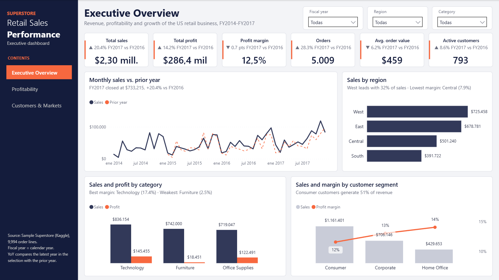
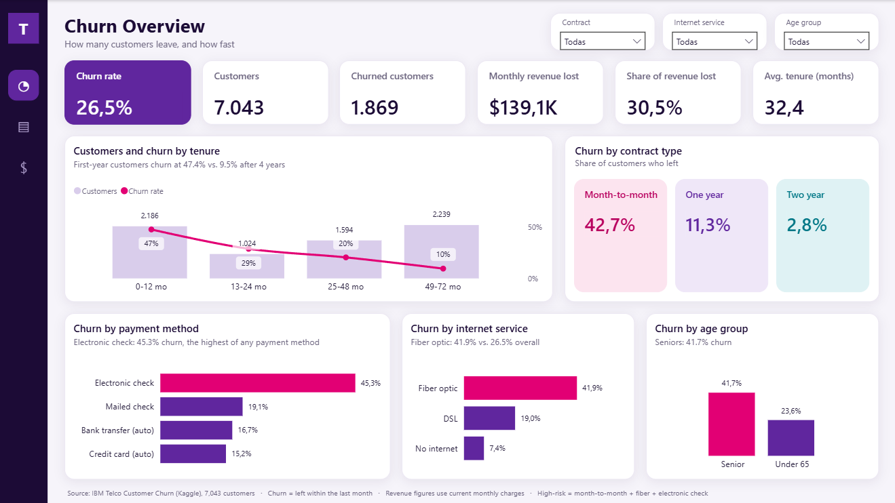
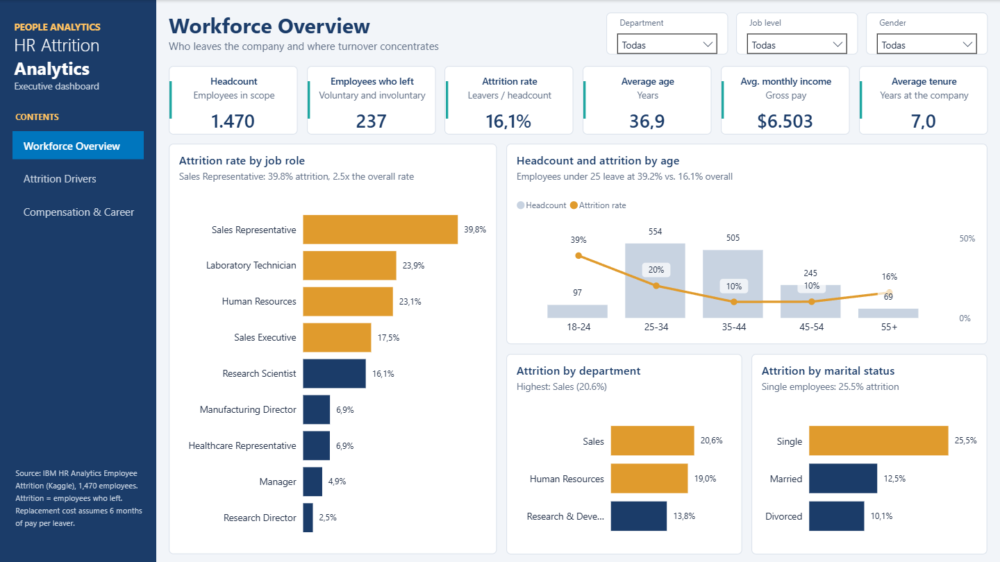
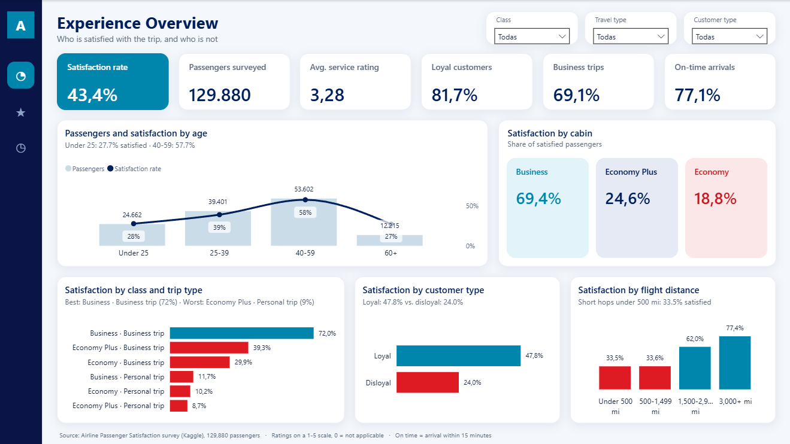
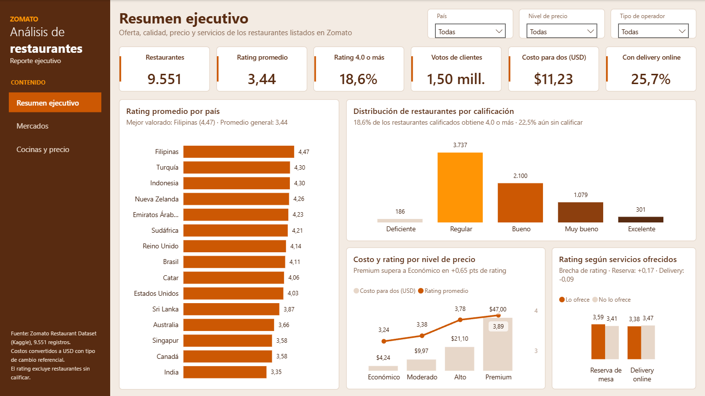

US office-supplies retailer
Retail Sales Performance
Executive view of sales, profit and margin with year-over-year comparisons, the products and states that lose money, and how discounts erode margin.
View detailsPower BI Developer · Remote from Lima, Peru
I turn the spreadsheets and exports you already have into clear Power BI reports for small and mid-sized businesses in the US, Europe and Australia.

I'm Kevin, a data analyst working with Power BI, Excel and SQL. I like taking messy, scattered data and turning it into one report a business owner opens every Monday, with numbers that match and a clear story about what to do next.
Every project below goes from raw files to a multi-page report: data cleaned in Power Query, a proper model, DAX measures and findings written in plain language.
Sales, profit, customers, churn, HR or operations, built around the questions you ask every week.
Excel, CSV, Google Sheets and exports from your tools, cleaned once in Power Query so the report refreshes itself.
Star schemas, time intelligence and measures you can trust: YoY, margins, rankings, cohorts.
A short write-up with what the data says, where money is leaking and what to focus on next.
Built on public datasets, the same way I'd build yours.
Executive view of sales, profit and margin with year-over-year comparisons, the products and states that lose money, and how discounts erode margin.
View details
Who is leaving, how much monthly revenue walks out with them, and which services and contract types keep customers.
View details
Why employees leave, which roles and pay bands are most at risk, and what turnover costs the business.
View details
Which parts of the journey drive satisfaction, how it differs by cabin and trip type, and the cost of delays.
View details
What separates highly rated restaurants from the rest: review volume, price range and the listings nobody rates.
View detailsHave sales, customer or operations data sitting in spreadsheets? Let's see what it can tell you.
Start a conversationOne-minute videos on how data changes business decisions.
Tell me about your business and the files you have. I reply within 24 hours with an honest view of what a dashboard could show you.